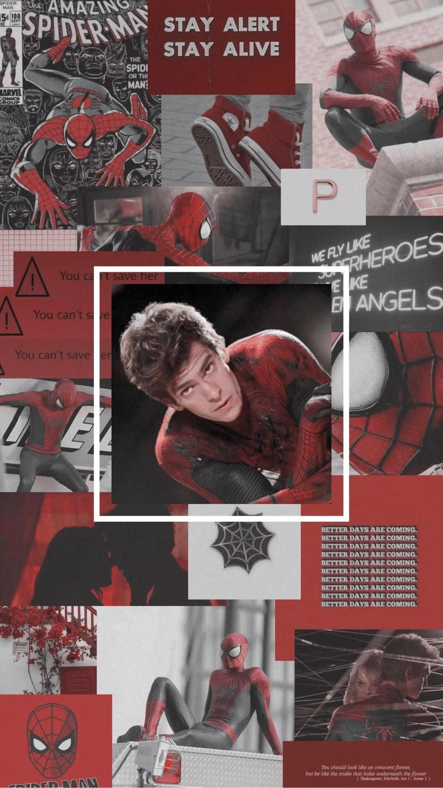

Andrew es la mejor adaptación del carisma que conocemos del Spiderman original, Andrew es probable el Peter Parker más inteligente que veremos entre los 3, ya que al no contar con la habilidad autónoma de crear telaraña con su cuerpo este tiene que valerse de sus propios inventos para complementar sus habilidades.
Es calmado, pero bastante expresivo y espontaneo, no está ni inhibido y parece cargar con muchos dolores y traumas de la infancia por la carencia de sus padres, punto neurálgico que lo motivará y lo conducirá en su rol de héroe, es decir que padece del síndrome del abandono habiendo sufrido la ausencia de sus padres lo que le dificulta poder confiar y abrirse a nuevas relaciones en su adolescencia y adultez joven.
Andrew es solitario y metódico, parece ser el Spiderman más neurótico de los 3, mientras que en su rol de su Spiderman su carisma y extroversión se potencian un 100%, siendo el más espontaneo de los 3 empatizando con los villanos y formando lazos afectivos con estos como si fueran sus amigos (como en los comics).
Este Spiderman vive el hecho más traumático de los Spiderman del cine, la muerte de su amada Gwen Stacy. Sin embargo y a pesar del sufrimiento y trauma que esto género en Peter parece ostentar gran resiliencia y carácter al volver e intentar ser Spiderman incluso después de este gran trauma y duelo.
La problemática de vivir 2 vidas es exclusiva del personaje, la encrucijada entre su felicidad y la de seguridad de Gwen es constante en toda la cinta, donde solo busca una pequeña esperanza, algo para estar con ella, algo que lo haga sentir seguro y tranquilo, algo que no existe.
La carga emocional de este Spiderman resulta ser enorme, la muerte del Tío Ben y del Capitán Stacy siguen muy presentes, así como la promesa que le hizo y las visiones que tiene de él. Los problemas económicos y familiares que tiene con su Tía May, la partida y termino del amor de su vida, la elección de si dejar vivir o morir a su amigo a coste de su ayuda.
No solo se debe buscar un héroe si no una inspiración, algo que nos haga cambiar, que nos haga ser mejor, algo en lo que Spiderman, se convierte